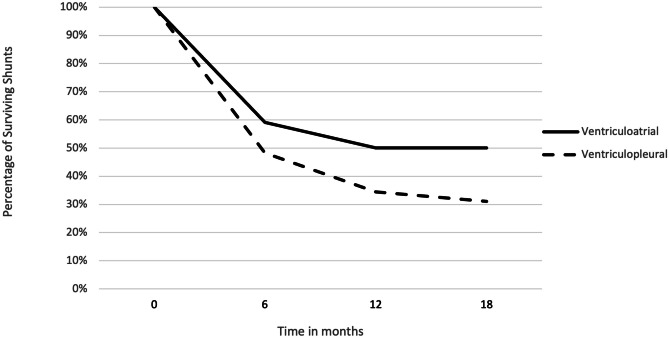
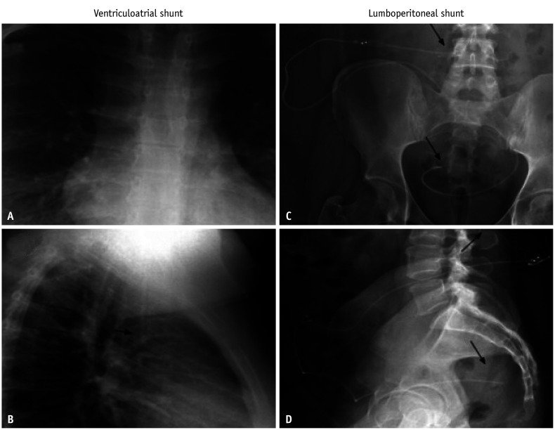
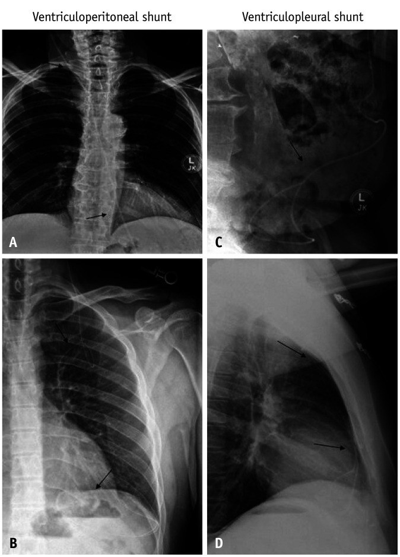
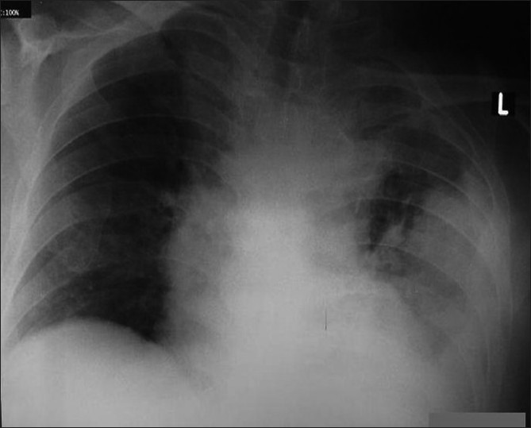
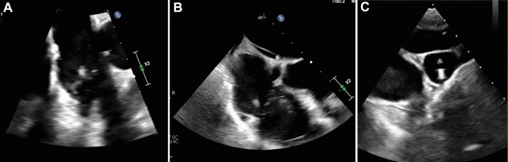
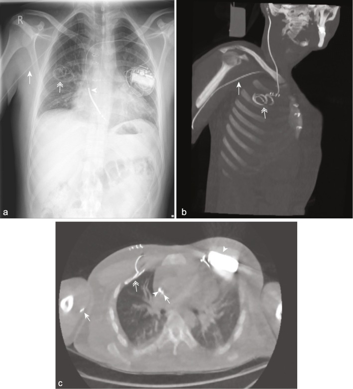

3002 — Shunt não thất–màng phổi & não thất–tĩnh mạch khi shunt ổ bụng thất bại / Ventriculopleural and ventriculoatrial shunts after peritoneal failure
Tags: pattern:hong-thiet-bi pattern:tu-dich pattern:huyet-khoi pattern:nhiem-trung vung:shunt vung:mang-phoi vung:tim protocol:shunt-series protocol:ULD-CT protocol:sieut-am-tim anatomy:shunt-nao-that
Mức chắc chắn (certainty): tổng hợp y văn (literature synthesis) — tổng quan hình ảnh shunt (Singh A et al., Korean J Radiol 2026, PMC13437215), tổng quan tràn dịch màng phổi sau shunt màng phổi kèm 5 ca (Küpeli E et al., Ann Thorac Med 2010, PMC2930656), nghiên cứu liều cực thấp cho shunt (Ryan DJ et al., Eur Radiol Exp 2021, PMC8236421), cộng các ca nguyên văn về huyết khối/viêm nội tâm mạc/tăng áp phổi. Số nào nguồn không nêu ghi "chưa rõ" — không bịa.
Bài này bàn hai đích thay thế khi ổ bụng không còn dùng được: shunt não thất–màng phổi (ventriculopleural shunt — VPL) và shunt não thất–tĩnh mạch (ventriculoatrial shunt — VA). Biến chứng muộn của shunt ổ bụng (gãy/ly giãn, pseudocyst, nhiễm trùng) ở 252; chấn thương đầu ở trẻ có shunt ở 251. Bài không bàn kỹ thuật mổ — chỉ đọc hình, chọn đường và nhận diện biến chứng.
1. Tổng quan bệnh học – cơ chế hình ảnh
- Vì sao phải đổi đích: shunt não thất–ổ bụng (ventriculoperitoneal shunt — VPS) là lựa chọn đầu tay nhưng hỏng 30–40% trong năm đầu và khoảng 50% đến năm thứ hai ở trẻ; biến chứng ổ bụng gặp 5–47% (Kim YH et al., Korean J Neurotrauma 2020, PMC7607039). Khi màng bụng "mất" — dính sau viêm phúc mạc/mổ bụng, pseudocyst tái phát, cổ trướng, thẩm phân phúc mạc, suy dinh dưỡng/protein thấp — phải chọn đích khác: màng phổi (VPL), nhĩ phải (VA), bàng quang, túi mật, hoặc mở thông não thất III qua nội soi (ETV).
- Ngưỡng định lượng quan trọng nhất — lượng dịch cần hấp thu: sản xuất dịch não tủy ở người khỏe mạnh ~0,33 mL/phút ≈ 475 mL/24 giờ, nhưng ở bệnh nhân não úng thủy 1,37–1,57 mL/phút ≈ 1.970–2.260 mL/24 giờ (Olakorede I et al., Brain Commun 2025, PMC11822472). Đây là con số quyết định: màng phổi một bên không thể hấp thu 2 L/ngày như màng bụng, nên VPL chỉ dung nạp được khi lưu lượng dịch não tủy đủ thấp hoặc có van chống siphon. Con số giáo khoa "500 mL/ngày × 3–4 lần thay" bị tổng quan 2023 coi là quan niệm cũ (Yamada S, Mase M, Neurol Med Chir 2023, PMC10166604) — nên dùng như bậc độ lớn, không phải hằng số chính xác.
- TẠI SAO VPL gây tràn dịch màng phổi: dịch não tủy vào khoang màng phổi được hấp thu qua lỗ bạch mạch của lá thành. Hấp thu có trần; khi lưu lượng vào > trần hấp thu → dịch tích lại. Hai cơ chế được nêu: (a) giảm khả năng hấp thu do màng phổi đã tổn thương (viêm màng phổi cũ, phơi nhiễm dịch não tủy mạn) và (b) dẫn lưu quá mức (Küpeli E et al. 2010, PMC2930656).
- Trần hấp thu của màng phổi — con số quyết định thứ hai (cửa 1 của Argon): bình thường màng phổi sinh dịch 0,01 mL/kg/giờ (người 60 kg ≈ 15 mL/ngày) và dẫn lưu bạch mạch tối đa 0,28 mL/kg/giờ — gấp 28 lần (ERJ Open Res 2024, PMC11440405). Nhưng thứ cần hấp thu là DNT: người lớn 600–750 mL/ngày ≈ 0,42–0,52 mL/kg/giờ ở 60 kg, tức cùng bậc với trần 0,28 → hệ số an toàn dưới 2 lần, và trần đó đo ở người lớn/động vật, chưa có giá trị chuẩn ở trẻ. Với trẻ 10 kg, nếu chỉ sinh 1/3 lượng DNT người lớn (≈ 8–10 mL/giờ) thì trần 0,28 × 10 = 2,8 mL/giờ vẫn thấp hơn nhu cầu 3–4 lần — đây là ước tính minh họa (suy luận), không phải số đo, nhưng khớp với thực tế trẻ nhỏ chịu kém hơn.
- TẠI SAO áp lực âm trong khoang màng phổi là con dao hai lưỡi: ở dung tích cặn chức năng (FRC), áp lực khoang màng phổi âm (cân bằng giữa lực đàn hồi co phổi và lực nở lồng ngực) — tổng quan sinh lý 2024 dùng đúng gradient này để giải thích rò dưỡng–màng phổi: khoang dưới nhện dương áp → màng phổi âm áp → dịch não tủy chảy theo gradient (ERJ Open Res 2024, PMC11440405). Với shunt, ΔP = ICP − P_màng phổi, nên chênh áp qua shunt tăng thêm khi bệnh nhân ngồi/đứng — dịch chảy nhanh hơn, dễ dẫn lưu quá mức. Vì vậy shunt màng phổi nên có van chống siphon (anti-siphon device); trong loạt 52 trẻ dùng van chống siphon chỉ 1 ca phải mổ lại vì tràn dịch, so với 20% phải sửa shunt vì tràn dịch có triệu chứng ở loạt 59 ca không/không rõ van chống siphon (cả hai loạt dẫn trong Ann Thorac Med 2010, PMC2930656).
- Loạt trẻ 2024 (Red Cross, Cape Town) — bằng chứng mới nhất, đọc đúng chiều: 43 trẻ / 59 lần đặt shunt ngoài phúc mạc (25 VA, 32 VPL); VPL tuổi trung vị 5,3 (0,5–13,4), đã qua trung vị 4,5 lần mổ shunt trước đó; mổ lại 65,5% (VA 45,5%); trung vị sống 5 tháng (VA 13,5); sống 62,1 / 48,3 / 34,5 / 31,0% ở 3 / 6 / 12 / 18 tháng; hỏng do tắc 26,3%, tràn dịch có triệu chứng 36,8%, nhiễm shunt 15,8%, di lệch đầu xa 15,8%, mủ màng phổi 5,3%; tràn dịch không triệu chứng 18,8%, có triệu chứng 15,6% (đều phải mổ lại); nhiễm shunt 15,6% (VA 4%); tràn khí màng phổi 6,3%; trung vị tới mổ lại 157 ngày; 57,9% ca mổ lại VPL quay về VP khi ổ phúc mạc hồi phục; trung tâm chỉ đặt VPL cho trẻ > 4 tuổi, nhóm Forte khuyến nghị chọn VA thay VPL ở trẻ < 5 tuổi (Childs Nerv Syst 2024, PMC10973063).

Đường liền = shunt não thất–nhĩ (VA), đường đứt = shunt não thất–màng phổi (VPL); trục tung % shunt còn sống, trục hoành tháng. Hai đường tách rõ ở 6–12 tháng (VA 59,1% → 50,0% so với VPL 48,3% → 34,5%); VPL còn 31,0% ở 18 tháng. Đây là loạt hồi cứu một trung tâm, cỡ mẫu nhỏ — dùng để tư vấn, không phải để khẳng định VPL luôn kém hơn VA. Nguồn: Childs Nerv Syst 2024 (PMC10973063), CC BY 4.0.- TẠI SAO VA sinh huyết khối: dịch não tủy làm thay đổi nội mạc và mang thromboplastin/serotonin → huyết khối tại chỗ và tổn thương nội mạc lan; đầu catheter cử động trong nhĩ phải va vào thành và van ba lá (Kim YH et al. 2020, PMC7607039; Gościniak P et al., Medicina 2022, PMC8877788). Hệ quả theo thứ tự thời gian: huyết khối đầu catheter → viêm nội tâm mạc nhiễm khuẩn (infective endocarditis — IE)/sùi van ba lá → thuyên tắc phổi tái diễn → tăng áp lực động mạch phổi huyết khối mạn (CTEPH).
- TẠI SAO VA có thể "thông mà không chạy": dịch não tủy phải chảy ngược áp lực tĩnh mạch trung tâm (central venous pressure — CVP). Khi CVP tăng (suy tim phải, tăng áp phổi), chênh áp bằng 0 hoặc âm → shunt còn thông nhưng không dẫn lưu → tăng áp lực nội sọ. Ca nguyên văn: nữ 19 tuổi có VA, áp lực tĩnh mạch cảnh 12–13 mmHg, sức cản đầu ra đo được 20 cmH₂O ≈ 15 mmHg; van chỉnh nhiều lần vẫn không cải thiện, nitroglycerin hạ được áp lực nội sọ (dùng như nghiệm pháp chẩn đoán), acetazolamid giảm triệu chứng (Norager NH et al., J Neurosurg Case Lessons 2025, PMC12377171).
- TẠI SAO nhiễm trùng VA nguy hiểm hơn nhiễm trùng VPS: nhiễm khuẩn huyết từ đầu catheter gieo liên tục vào tuần hoàn → sùi van ba lá, thuyên tắc phổi nhiễm khuẩn, phình mạch nhiễm khuẩn, và viêm cầu thận do shunt (shunt nephritis) — bệnh phức hợp miễn dịch do nhiễm vi khuẩn độc lực thấp mạn tính. Ca nguyên văn: nam 31 tuổi có VA, nhiễm S. aureus nhạy methicillin, siêu âm tim qua thực quản thấy sùi 11 mm trên van ba lá + khối nhỏ ở đầu catheter tại ngã ba tĩnh mạch chủ trên – nhĩ phải; điều trị rút shunt + 6 tuần oxacillin + rifampin (Passey S et al., JACC Case Rep 2025, PMC11830242).
- Tỷ lệ định lượng (để tư vấn, không để hù): tràn dịch có triệu chứng phải sửa shunt 20% ở trẻ (Hoffman, 59 ca VPL; một nửa là nhũ nhi) và 4,5% ở người lớn (Megison, 88 ca VPL); biến chứng chung của VPL ở người lớn 24% (Megison, dẫn trong Küpeli E et al. 2010, PMC2930656): tụ dịch dưới màng cứng/máu tụ 5,6%, tắc đầu gần 6,8%, tràn dịch 4,5%, di trú catheter 2,2%, nhiễm trùng 2,2%, tràn khí màng phổi 1,1%, dính màng phổi không đặt được 1,2%.
- Với VA, con số gộp rất thấp: biến chứng huyết khối–tắc mạch < 1% trong y văn tổng hợp (Kim YH et al., Korean J Neurotrauma 2020, PMC7607039).
- Nhưng loạt nhỏ trẻ em gần đây cao hơn nhiều: 25% (2/8) có biến chứng huyết khối (Kendirlioglu BC et al., North Clin Istanb 2026, PMC13591038) — khoảng tin cậy rất rộng, phải nói rõ khi tư vấn.
2. Mẫu hình + chẩn đoán phân biệt theo vị trí (gamut)
Câu hỏi thực hành: đầu catheter nằm ở đâu, và bệnh nhân đang thiếu dẫn lưu hay đang bị dẫn lưu quá mức? Hai trục này tạo gamut.
Trục A — VPL (đầu xa trong khoang màng phổi)
- Tràn dịch/tràn khí–dịch do shunt (CSF hydrothorax): dịch trong suốt, transudate, thường bên đặt catheter; nhỏ và không triệu chứng = dấu shunt đang chạy, không phải hỏng (Küpeli E et al. 2010).
- Tràn dịch có triệu chứng/tăng áp lực khoang màng phổi (tension hydrothorax): khó thở, giảm oxy máu, lệch trung thất — cấp cứu.
- Tràn khí màng phổi (thủ thuật, catheter xuyên màng phổi tạng).
- Rò shunt–phế quản (shunt-bronchial fistula): catheter ăn mòn vào nhu mô phổi → ho ra dịch não tủy rồi nuốt vào dạ dày, viêm phổi tái diễn; nghiệm pháp hạt nhân cho thấy hoạt độ đi màng phổi → khí quản → phế quản → dạ dày → ruột (Katsevman GA et al., World Neurosurg X 2020, PMC6909168).
- Nhiễm trùng khoang màng phổi/viêm màng phổi do shunt: dịch đục, neutrophilic, có thể tái phát dù đã điều trị (Abdalla AA et al., Cureus 2021, PMC7954663 — Cutibacterium acnes).
- Dẫn lưu quá mức → hội chứng nắp sọ lún (sinking skin flap): rút dịch màng phổi bằng ống dẫn lưu có hút → áp lực âm tăng thêm → nắp sọ lún; ca nguyên văn: lún sau đặt ống 2 ngày, ngừng hút + tăng áp lực van → nắp sọ phồng lại trong 24 giờ (Liang SQ et al., J Med Case Rep 2024, PMC11669209).
Trục B — VA (đầu xa trong nhĩ phải/tĩnh mạch lớn)
- Huyết khối nhĩ/tĩnh mạch quanh catheter: khối không ngấm thuốc trong lòng nhĩ, có thể canxi hóa ống catheter sau nhiều năm.
- Viêm nội tâm mạc nhiễm khuẩn: sùi trên van ba lá/đầu catheter, cấy máu dương tính, sốt + thổi tâm thu mới.
- Viêm cầu thận do shunt: suy thận, protein niệu, hồng cầu niệu sau nhiều năm nhiễm khuẩn độc lực thấp.
- CTEPH/tăng áp phổi: khó thở tiến triển nhiều năm sau đặt shunt, thường không có triệu chứng nhiễm trùng (Gościniak P et al. 2022).
- VA "thông nhưng không dẫn lưu" do CVP cao: đau đầu/tăng áp lực nội sọ, van đã chỉnh nhiều lần.
- Di trú đầu xa: vào xoang vành (coronary sinus), động mạch phổi, hoặc tĩnh mạch chủ trên gây hội chứng tắc tĩnh mạch chủ trên.
- Loạn nhịp/perforation do đầu catheter cử động trong nhĩ.

X-quang ngực: (A) thẳng và (B) nghiêng — catheter shunt não thất–tĩnh mạch đi dọc cổ vào tĩnh mạch cảnh trong, đầu tận dừng ngang mức nhĩ phải (mũi tên). (C, D) là shunt thắt lưng–phúc mạc để so sánh đường đi. Đọc sai vị trí đầu tận (vào xoang vành/thất phải) là nguyên nhân hỏng shunt và loạn nhịp. Nguồn: Singh A et al., Korean J Radiol 2026, PMC13437215 Fig. 3, CC BY-NC 4.0.Trục C — đích khác (biết để loại trừ): shunt não thất–bàng quang (nhiễm trùng, sỏi quanh catheter), shunt–túi mật (viêm đường mật), shunt thắt lưng–phúc mạc (tụ dịch, tắc).
3. Bảng so sánh phân biệt (ma trận đối chiếu)
| Thực thể (entity) | Hình ảnh điển hình | Chốt vào (rule-in) | Chốt loại (rule-out) | Gợi ý xác nhận |
|---|---|---|---|---|
| VPL — tràn dịch do shunt, không biến chứng | Dịch lượng ít–vừa, một bên, không triệu chứng; đầu catheter nằm trong khoang màng phổi; CT/phim so với phim cũ không đổi | Đầu catheter trong khoang màng phổi + dịch nhỏ, bệnh nhân không khó thở | Dịch tăng nhanh, đục, sốt → nhiễm trùng; dịch hai bên → nguyên nhân khác | So phim cũ; siêu âm màng phổi; không chọc dò nếu không triệu chứng |
| VPL — tràn dịch có triệu chứng/tăng áp lực | Dịch nhiều, đẩy lệch trung thất, xẹp phổi; khó thở, giảm oxy | Khó thở + dịch nhiều + cải thiện sau rút dịch | Dịch nhỏ, không triệu chứng → không can thiệp | Siêu âm; chọc hút số lượng vừa phải, theo dõi nắp sọ |
| VPL — nhiễm trùng khoang màng phổi | Dịch đục, vách hóa, có thể tràn khí; sốt, tăng bạch cầu | Cấy dịch/DNT cùng loại vi khuẩn + dịch neutrophilic | Dịch trong, transudate, không sốt → không nhiễm | Cấy máu + cấy dịch; rút shunt là bắt buộc khi nhiễm |
| VPL — dẫn lưu quá mức | Nắp sọ lún, não thất khe; đau đầu tư thế; sau khi rút dịch màng phổi | Nắp sọ lún + thời điểm ngay sau chọc/rút dịch | Nắp sọ lún do mất dịch não tủy nơi khác/rò → tìm rò | Ngừng hút, tăng áp lực van, chụp CT sọ |
| VA — huyết khối quanh catheter | Khối không ngấm thuốc trong nhĩ phải, bao quanh catheter; có thể canxi hóa ống | Khuyết thuốc ôm catheter trong nhĩ | Sùi di động + cấy máu (+) → IE, không chỉ huyết khối | Siêu âm tim (TTE → TEE), CT tĩnh mạch |
| VA — viêm nội tâm mạc nhiễm khuẩn | Sùi di động trên van ba lá/đầu catheter (ca: 11 mm), thổi tâm thu, sốt | Sùi + cấy máu (+) cùng vi khuẩn | Cấy máu âm nhiều lần + không sùi → huyết khối vô khuẩn | TEE (nhạy hơn TTE), cấy máu 3 lần trước kháng sinh |
| VA — "thông nhưng không dẫn lưu" do CVP cao | Shunt không tắc trên hình, não thất vẫn giãn; CVP/JVP cao; sức cản đầu ra tăng | Đo CVP/JVP cao + chênh áp đầu ra thấp | Shunt tắc thật (không thấy thuốc qua) → sửa shunt | Đo CVP trước mổ; nghiệm pháp nitroglycerin; siêu âm tim |
| VA — CTEPH | Thiếu máu phổi dạng mảng/đoạn trên CTPA, giãn thất phải; V/Q scan khuyết tưới; mPAP tăng | Khuyết tưới V/Q + CTPA có huyết khối tổ chức hóa + mPAP > 20 mmHg | CTPA bình thường + V/Q bình thường → loại CTEPH | V/Q scan, CTPA, thông tim phải |

Bốn panel X-quang ngực/bụng: (A, B) shunt não thất–ổ bụng — mũi tên chỉ catheter xa đi từ ngực xuống ổ bụng, đầu tận trong phúc mạc; (C, D) shunt não thất–màng phổi — mũi tên chỉ catheter đi dọc cổ–ngực, đầu tận nằm trong khoang màng phổi (D là tư thế nghiêng). Đọc VPL khác VPS ở chỗ không có đoạn catheter trong ổ bụng và đầu tận dừng trên cơ hoành. Nguồn: Singh A et al., Korean J Radiol 2026, PMC13437215 Fig. 2, CC BY-NC 4.0.Ba câu hỏi cố định khi đọc phim shunt có đích "lạ"
- Đích có đúng không? — VPL: đầu tận trong khoang màng phổi, trên cơ hoành; VA: đầu tận ngang nhĩ phải, không vào xoang vành/thất phải.
- Đích có đang bị "quá tải" không? — VPL: dịch màng phổi; VA: huyết khối/sùi/tăng áp phổi.
- Còn dẫn lưu được không? — não thất có giãn lại so phim cũ? van có đổi cài đặt? Đừng chỉ nhìn catheter "còn nguyên".
4. Protocol chụp + hệ phân độ/điểm chuẩn hóa
- Bước 1 — phim shunt series (skull + ngực + bụng, 2 tư thế khi cần): xác định đường đi, mối nối, đầu tận; là phương thức tốt nhất cho gãy catheter (Singh A et al. 2026). Nhược điểm: không thấy dịch, không thấy huyết khối, không thấy sùi.
- Bước 2 — CT liều cực thấp toàn thân (ultralow-dose CT — ULD-CT) khi nghi hỏng shunt: liều hiệu dụng 0,16 mSv (0,07–0,17) so với 0,25 mSv (0,06–1,69) của shunt series (p = 0,002), thấy toàn bộ đường đi và mô quanh catheter tốt hơn, đặc biệt lồng ngực–bụng (Ryan DJ et al. 2021, PMC8236421). Đây là lựa chọn thay thế giảm 36% liều mà tăng thông tin — nhưng không thay thế đánh giá lâm sàng.
- Bước 3 — siêu âm màng phổi (VPL): xác nhận dịch, thể tích, vách, vị trí đầu catheter, hướng dẫn chọc hút. Luôn đo lại sau chọc và theo dõi dấu hiệu nắp sọ lún.
- Bước 4 — siêu âm tim/TEE (VA): tìm sùi, huyết khối, hở van ba lá, áp lực động mạch phổi. TTE trước, TEE khi nghi IE hoặc TTE không kết luận (ca sùi 11 mm chỉ thấy rõ trên TEE — Passey S et al. 2025).
- Bước 5 — xét nghiệm "không thể thiếu" trước khi kết luận nhiễm: cấy máu 2–3 lần trước kháng sinh + cấy dịch não tủy qua van; với VPL thêm cấy dịch màng phổi. Nhiễm trùng shunt 8–12%, phần lớn trong 6 tháng đầu (Küpeli E et al. 2010).
- Bước 6 — hình ảnh chức năng khi còn nghi ngờ: shuntogram hạt nhân (thấy thuốc đi qua đường shunt; ca rò phế quản thấy thuốc vào khí quản–dạ dày — Katsevman GA et al. 2020); CT tĩnh mạch/CTPA khi nghi tắc tĩnh mạch chủ trên hoặc CTEPH; V/Q scan khi nghi CTEPH.
- Bước 7 — đo áp lực trước khi chọn VA: đo CVP/JVP và đánh giá chức năng tim phải; thông tim phải nếu nghi tăng áp phổi. Ngưỡng tham chiếu từ ca nguyên văn: JVP 12–13 mmHg đủ để làm shunt ngừng dẫn lưu dù van mở (Norager NH et al. 2025).
Sơ đồ chọn đích khi VPS thất bại
flowchart TD
A[VPS hỏng: dính, pseudocyst, viêm phúc mạc, cổ trướng] --> B{Còn dùng được màng bụng?}
B -->|Có| C[Đặt lại VPS / VPS + van chống siphon]
B -->|Không| D{Màng phổi còn tốt?}
D -->|Có, không có bệnh màng phổi| E[VPL + van chống siphon]
D -->|Không: dính màng phổi, tràn dịch tái phát, nhũ nhi nhỏ| F{Nhĩ phải và tim phải còn tốt?}
F -->|Có, CVP bình thường| G[VA: đầu tận ngang nhĩ phải]
F -->|Không: tăng áp phổi, suy tim phải, nhiễm khuẩn huyết| H[ETV / shunt bàng quang / túi mật / thắt lưng–phúc mạc]
E --> I[Theo dõi: phim ngực, siêu âm màng phổi, não thất]
G --> J[Theo dõi: siêu âm tim, cấy máu khi sốt, CTPA/VQ nếu khó thở]
Ngưỡng xử trí tràn dịch sau VPL (lấy từ loạt 32 VPL ở trẻ) — dùng để quyết định, thay vì "thấy dịch là chọc":
- Không triệu chứng, lượng ít → theo dõi, không can thiệp: 6/32 (18,8%) tràn dịch không triệu chứng không cần can thiệp gì.
- Có triệu chứng (khó thở, giảm SpO₂, đẩy trung thất) → chọc hút/dẫn lưu KHÔNG hút + nâng áp lực van; 5/32 (15,6%) thuộc nhóm này và đều phải mổ lại.
- Tái diễn hoặc không cải thiện sau 1–2 lần dẫn lưu → bỏ VPL: 57,9% quay về VP khi ổ phúc mạc hồi phục; còn lại chuyển VA hoặc ETV. Trung vị tới mổ lại 157 ngày (nhóm chuyển hẳn sang VP) và 16 ngày (nhóm còn phải dùng shunt ngoài phúc mạc) — biến chứng không chỉ xảy ra sớm (Childs Nerv Syst 2024, PMC10973063).
- Quy tắc an toàn tuyệt đối: nếu đã đặt ống dẫn lưu ngực ở bệnh nhân VPL → KHÔNG hút; ca gốc cho thấy hút ống ngực gây tụt vạt da trong 2 ngày, và ngừng hút + nâng áp lực van → vạt da nở lại trong 24 giờ (Liang SQ et al. 2024, PMC11669209).
Phân tầng biến chứng (dùng Clavien–Dindo cho can thiệp, không phải "độ nặng shunt"): tràn dịch nhỏ không triệu chứng = không can thiệp; tràn dịch có triệu chứng = chọc hút (grade I–II); nhiễm trùng/viêm màng phổi hoặc sùi van = rút shunt + kháng sinh (grade III); tăng áp lực khoang màng phổi/sốc nhiễm khuẩn = cấp cứu (grade IV–V). Không có hệ phân độ riêng cho VPL/VA trong y văn đã đọc — ghi "chưa rõ" thay vì bịa thang điểm.
5. Biến thể bình thường và cạm bẫy
- "Tràn dịch nhỏ = shunt đang chạy", không phải shunt hỏng. Tổng quan Ann Thorac Med 2010 nhấn mạnh: dịch ít, không triệu chứng thường tự hết; chọc hút chỉ vì "thấy dịch trên phim" là can thiệp oan và có thể gây nắp sọ lún. Loạt trẻ 2024 định lượng đúng nhóm này: 18,8% tràn dịch không triệu chứng, không cần can thiệp, so với 15,6% có triệu chứng (Childs Nerv Syst 2024, PMC10973063).
- Chọc/rút dịch màng phổi ở bệnh nhân VPL có thể gây nắp sọ lún trong 24 giờ — nếu phải rút: không hút áp lực âm mạnh, rút chậm, tăng áp lực van, theo dõi thần kinh (Liang SQ et al. 2024).
- VA còn "thông" trên hình không loại trừ hỏng chức năng: CVP cao làm mất chênh áp; phải đo áp lực, không chỉ nhìn catheter.
- Catheter VA cũ để lại có thể canxi hóa và gây IE sau 30 năm — ca nam 41 tuổi, catheter VA đặt từ năm 12 tuổi, còn sót đoạn trong nhĩ, nhập viện với viêm nội tâm mạc do enterococcus + hở ba lá, phải mở xương ức + tuần hoàn ngoài cơ thể để lấy (Gopal VV et al., Asian J Neurosurg 2016, PMC4802946). Bài học: không để lại đoạn catheter "vô hại".
- Đầu catheter VA vào xoang vành (coronary sinus) có thể trông "đúng vị trí" trên phim ngực nhưng không dẫn lưu đúng; cần phim nghiêng/CT hoặc siêu âm tim để xác định.
- Đừng nhầm "dịch màng phổi" với "dịch dưới màng cứng": tụ dịch dưới màng cứng sau đặt shunt gặp ~5,6% ở loạt VPL người lớn (Megison) — đọc CT sọ, không chỉ ngực.
- Bẫy "satisfaction of search": thấy sùi van ba lá rồi dừng — phải tìm thêm huyết khối tĩnh mạch, ổ nhiễm trùng ngoài tim, và nhiễm trùng shunt (cấy DNT).
- Đừng mặc định "dịch màng phổi = nhiễm trùng": trong loạt VPL ở trẻ, mủ màng phổi chỉ 3,1% trong khi tràn dịch do DNT 15,6%; nhưng nhiễm shunt 15,6% có thể biểu hiện chỉ bằng dịch mới + đau đầu, không sốt rõ → cấy DNT + cấy dịch màng phổi trước khi kết luận (Childs Nerv Syst 2024, PMC10973063).
- Đừng quên trần hấp thu khi tư vấn: VPL là hệ thống "chạy sát trần" (trần bạch mạch 0,28 mL/kg/giờ so với DNT 600–750 mL/ngày ở người lớn); ở trẻ < 4–5 tuổi hoặc có bệnh phổi/dính màng phổi, tỷ lệ thất bại cao đến mức nhiều trung tâm chọn VA trước (Childs Nerv Syst 2024, PMC10973063).
6. Tự lượng giá — Blind Quiz
Ca 1 — Nam 75 tuổi, đặt VPL sau khi VPS nhiễm trùng; 20 ngày sau khó thở, không sốt.

- Gợi ý lâm sàng: khó thở tiến triển, không sốt, đã có shunt màng phổi.
- Câu hỏi: Dịch nằm bên nào? Có bằng chứng nhiễm không? Ba chẩn đoán phân biệt và bước xử trí đầu tiên?
Bấm để hiện đáp án (findings + chẩn đoán)
- Dấu hiệu: tràn dịch màng phổi trái lượng lớn, mờ đáy phổi trái, không thấy mức khí–dịch; đầu catheter màng phổi bên phải vẫn tại chỗ.
- Chẩn đoán: tràn dịch do shunt màng phổi (CSF hydrothorax) có triệu chứng. Dịch là exudate tế bào lympho, cấy âm; bệnh nhân đáp ứng sau 2 lần chọc hút, không tái phát sau 1 năm.
- Phân biệt: nhiễm trùng/viêm màng phổi (sốt, dịch đục, neutrophilic), suy tim (dịch hai bên, BNP cao), tắc shunt (não thất giãn).
- Nguồn: Küpeli E et al., Ann Thorac Med 2010, PMC2930656 Fig. 2, CC BY 4.0 (trường hợp 2).
Ca 2 — Nam 31 tuổi có VA, sốt dai dẳng dù đã dùng oxacillin; cấy máu S. aureus nhạy methicillin.

- Gợi ý lâm sàng: shunt tĩnh mạch, nhiễm khuẩn huyết tái phát.
- Câu hỏi: Cấu trúc bất thường nằm ở van nào, kích thước bao nhiêu? Vì sao phải rút shunt? Kháng sinh bao lâu?
Bấm để hiện đáp án
- Dấu hiệu: sùi 11 mm di động trên van ba lá (A, B) và khối nhỏ ở đầu catheter tại ngã ba tĩnh mạch chủ trên – nhĩ phải (C).
- Chẩn đoán: viêm nội tâm mạc nhiễm khuẩn do shunt não thất–tĩnh mạch. Điều trị: rút shunt + oxacillin + rifampin 6 tuần; không thể chữa khỏi nếu để dị vật.
- Vì sao: đầu catheter là dị vật tiếp xúc trực tiếp với tuần hoàn → sùi hình thành trên van và catheter, kháng sinh đơn thuần không diệt được màng sinh học.
- Nguồn: Passey S et al., JACC Case Rep 2025, PMC11830242 Fig. 1, CC BY-NC-ND 4.0 (dùng nguyên bản).
Ca 3 — Bệnh nhân có VPL mới đặt, cần xác định đầu catheter nằm ở đâu trước khi rút ống dẫn lưu màng phổi.

- Gợi ý lâm sàng: sau đặt VPL, có ống dẫn lưu màng phổi, cần chứng minh vị trí đầu catheter.
- Câu hỏi: Phim ngực (a) có đủ để khẳng định đầu catheter trong khoang màng phổi không? CT (b, c) thêm được thông tin gì? Liều CT này so với shunt series?
Bấm để hiện đáp án
- Dấu hiệu: phim ngực chỉ thấy đầu catheter dạng mũi tên đôi ở vùng giữa phổi phải, không phân biệt được với nhu mô/mao mạch; CT liều cực thấp đa bình diện thấy rõ catheter chạy trong khoang màng phổi và đầu tận nằm trên thùy trên phổi phải, không có tràn khí.
- Ý nghĩa: ULD-CT 0,16 mSv so với 0,25 mSv của shunt series, và nhìn được toàn bộ đường đi (Ryan DJ et al. 2021).
- Cạm bẫy: kết luận "đầu catheter trong phổi" trên phim ngực là không đủ — cần CT hoặc siêu âm.
- Nguồn: Ryan DJ et al., Eur Radiol Exp 2021, PMC8236421 Fig. 5, CC BY 4.0.
Bài liên quan chéo
- 252 – Biến chứng muộn của shunt não thất
- 251 – Chấn thương đầu ở trẻ có shunt hoặc rối loạn đông máu
- 093 – Hội chứng tĩnh mạch chủ trên (VA lâu năm → hẹp/tắc tĩnh mạch chủ trên)
- 3043 – Hẹp–tắc tĩnh mạch chủ trên lành tính ở trẻ sau catheter trung tâm (đánh giá SVC trước khi đặt VA)
- 070 – Thuyên tắc phổi & bệnh tim–phổi cấp (CTEPH sau VA)
- 200 – Tổng quan hệ Thần kinh
Ảnh
- Ảnh lấy từ bài mở qua PMC ngày 2026-10-27; giấy phép từng file trong
images/CREDITS.md. - Không có
composite_*.jpg: 3 trong 5 ảnh là CC BY-NC-ND (cấm tạo tác phẩm phái sinh) nên không ghép; ảnh CC BY dùng nguyên bản để thống nhất cách trình bày. - Radiopaedia/AuntMinnie: chỉ dẫn link, không tải.
Không dùng để chẩn đoán độc lập khi chưa có người hướng dẫn.